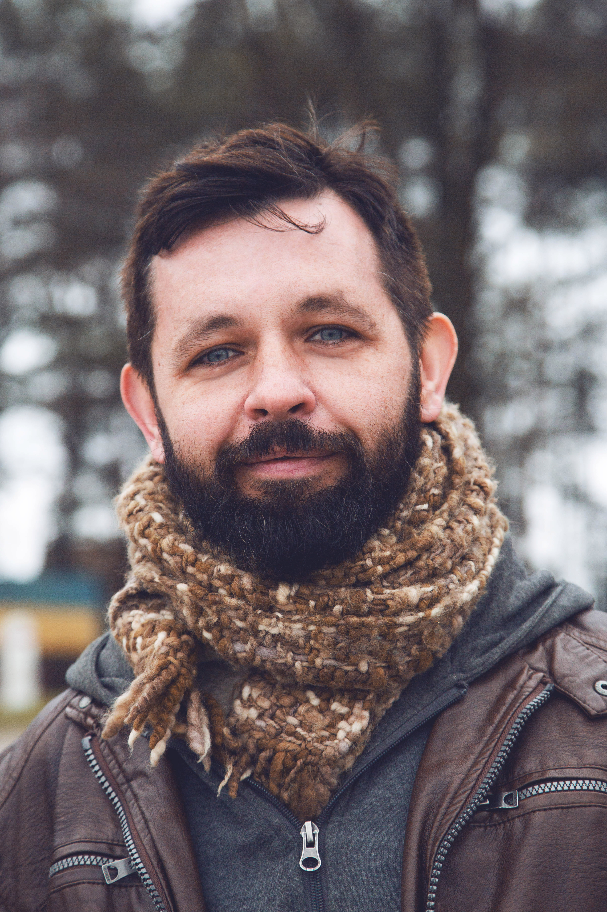

rost.panichev@gmail.com
|  | Rostyslav PanichevContent Manager, Journalist, Copywriter |
Translating, editing, writing, storytelling
| Bulls Media |
Content Manager | 2021 - present
Bulls Media Content creating, translations, HTML, PHP, CSS code editing |
| Leeloo.ai |
Content Editor | Early 2021 - mid 2021
Copy writing, content managing and editing, SEO, translation |
| iFarming magazine |
Editor | 2020 - 2021
Editing magazine, coordinating freelancers, writing articles |
| SkyLine Travel Agency |
Communications Coordinator | 2015 - 2019
Relations with travel agencies in Latin America, translation of correspondence and documents, tourists guiding (Spanish language) |
| MobiMill |
Translator | 2016 - 2019
Software and apps localization for the Ukrainian market (English and Ukrainian) |
| John Deer Ukraine |
Translator | 2009 - 2014 Translations (German and English, technical and marketing documents), copywriting, writing articles |
Agronomy & Crop Science, Horticulture
National Agrarian University | 1996- 2000
phone: +0965674022
rost.panichev@gmail.com
 Rostyslav Panichev
Rostyslav Panichev